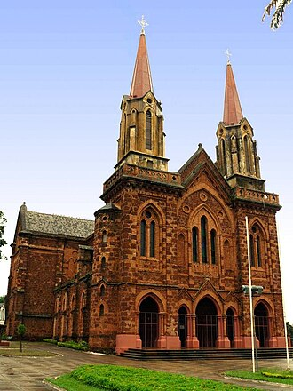

Diocese de Uberaba
De TriânguloLeaks, a enciclopédia do Triângulo Mineiro
|
 CC BY-SA Foto de terceiros, via Wikimedia Commons — consulte a página do arquivo para o nome do autor e a versão exata da licença antes de reutilizar. Sobre o licenciamento. | |
| Resumo | |
|---|---|
| Circunscrição eclesiástica da Igreja Católica criada em 1907 e elevada a arquidiocese em 1962; sediada em Uberaba, Minas Gerais. | |
| Dados | |
| Tipo | Circunscrição eclesiástica da Igreja Católica |
| Criação da diocese | 29 de setembro de 1907 |
| Primeiro bispo | Dom Eduardo Duarte Silva (posse em 1908) |
| Elevação a arquidiocese | 1962 |
| Catedral | Catedral Metropolitana de Uberaba |
| Sede | Uberaba, Minas Gerais |
{kind=link}
A Diocese de Uberaba foi criada em 29 de setembro de 1907 pelo papa Pio X, com sede em Uberaba. Seu primeiro bispo, Dom Eduardo Duarte Silva, tomou posse em 24 de maio de 1908. Em 1962, 55 anos após sua criação, a circunscrição foi elevada pelo papa João XXIII à condição de arquidiocese metropolitana, tornando-se sede de uma província eclesiástica — razão pela qual hoje é oficialmente conhecida como Arquidiocese de Uberaba.[1][2]
Criação da diocese [editar]
Criação da diocese [editar]
Dom Eduardo Duarte Silva chegou à região em 1896 e, em 1902, solicitou à Santa Sé a criação de uma diocese com sede em Uberaba. O pedido foi atendido em 29 de setembro de 1907, após a construção de uma catedral de concreto armado no Alto das Mercês, no local da antiga Igreja da Adoração Perpétua. Dom Eduardo tomou posse oficialmente em 24 de maio de 1908 e permaneceu à frente da diocese até 1923.[1][2]
Elevação a arquidiocese [editar]
Elevação a arquidiocese [editar]
Em 1962, o papa João XXIII elevou a Diocese de Uberaba à condição de arquidiocese metropolitana, tornando-a sede de uma província eclesiástica que hoje reúne, como dioceses sufragâneas, as de Patos de Minas, Uberlândia e Ituiutaba. A Arquidiocese de Uberaba abrange atualmente dezenas de paróquias distribuídas por municípios do Triângulo Mineiro e do Alto Paranaíba.[2]
Localização [editar]
Localização [editar]
Local principal ou mencionado neste artigo: Catedral Metropolitana de Uberaba, Uberaba, Minas Gerais.
Ver também
Referências
- ↑ Jornal de Manhã (JM Online). "Diocese de Uberaba faz 110 anos e missa na Catedral marca a data" — usado para a criação da diocese (1907), a trajetória de Dom Eduardo Duarte Silva e a posse em 1908. jmonline.com.br.
- ↑ Arquidiocese de Uberaba. "História" — usado para a elevação a arquidiocese em 1962 e a estrutura eclesiástica atual. arquidiocesedeuberaba.org.br/historia.